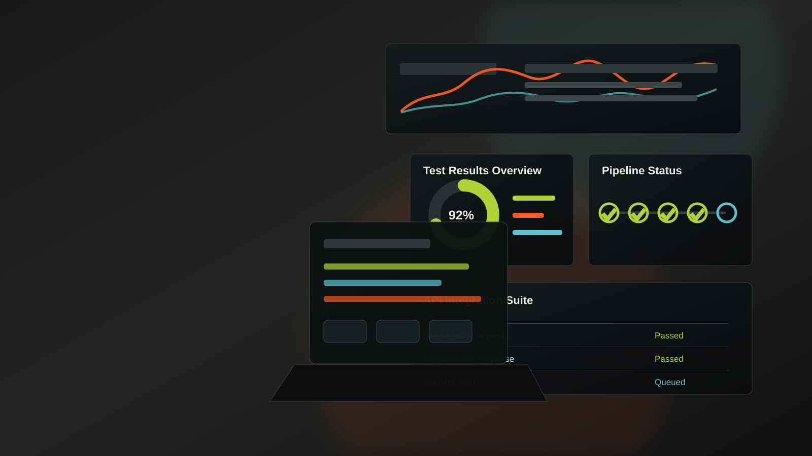

Automation Frameworks
Selenium WebDriver, Java, Cucumber BDD, TestNG, JUnit and POM-based frameworks built for maintainable regression coverage.

Automation / Manual Test Analyst | ISTQB Certified
I help Agile teams build reliable UI and API test coverage across web applications, microservices and cloud-connected platforms.
Quality partner for complex delivery
I am a Newcastle upon Tyne based Automation Test Analyst with hands-on experience across Selenium WebDriver, Cucumber BDD, Playwright, REST Assured, Postman, Newman, Jenkins, Azure DevOps and AWS event-driven services.
My work spans test strategy, framework development, functional testing, integration testing, regression, exploratory testing, UAT support, API validation, observability and release readiness.
How I can help
Selenium WebDriver, Java, Cucumber BDD, TestNG, JUnit and POM-based frameworks built for maintainable regression coverage.
REST Assured, Postman, Newman and Swagger/OpenAPI contract testing for reliable backend and microservices validation.
Playwright TypeScript coverage across Chrome, Firefox and Edge with responsive UI validation and rapid feedback loops.
Clear test plans, RTM coverage, defect lifecycle management, UAT support, release readiness reporting and stakeholder visibility.
Automation integration into Jenkins and Azure DevOps pipelines with Maven, SonarQube and continuous testing practices.
AWS Lambda, SNS, SQS, CloudWatch, Kibana and Dynatrace validation for event-driven systems and faster root cause analysis.
Delivery capabilities
Shape the right test approach before delivery pressure grows.
Build repeatable coverage that reduces manual effort.
Validate the services, data and dependencies behind the UI.
Turn test evidence into faster decisions and cleaner defects.
Featured work
DXC Technology / Lloyds Insurance
Automation and integration testing for a microservices-based insurance platform programme.
DXC Technology / Lloyds Insurance
End-to-end UI and API test delivery across enterprise release cycles.
DXC Technology / Lloyds Insurance
Automation proof of concept showing high coverage potential in a short delivery window.
Experience highlights
DPS Blueprint 2 (LORS): test strategy, UI/API automation, Playwright, Virtuoso QA, AWS event-driven validation, service virtualisation and CI/CD quality gates.
TROIKA: Selenium Java, Cucumber BDD, REST Assured, Postman, Newman, regression, integration, data validation, Jira Zephyr and performance testing.
Mayflower POC: rapid automation framework delivery and proof of high test coverage potential using Selenium, Java, Cucumber and TestNG.
Skills and tools
Automation command centre
Certifications and education
Available for QA automation roles
Let’s discuss automation frameworks, API testing, CI/CD quality gates, cloud validation, UAT support or enterprise QA delivery.